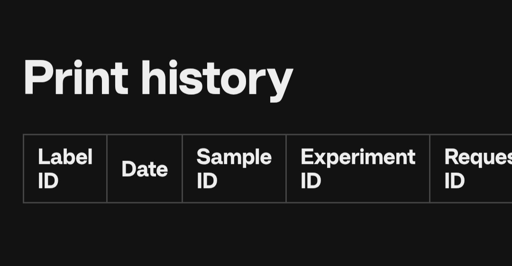
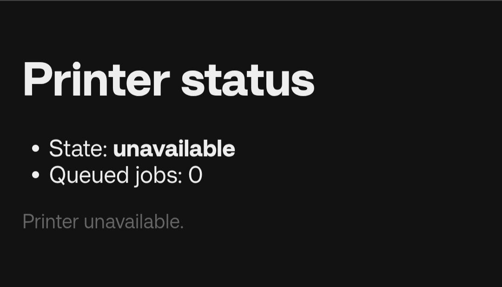

Reference
After printing
History and reprints
- Open History to find previous labels.
- Select a label ID to see its full record.
- A reprint preserves the original sticker ID.
- Batch workbooks can be downloaded from History.
Status and admin
- Use Status to check the printer and queue.
- The calibration page does not consume an ID.
- Only an administrator should change the ID counter.


If the page will not open
Stay connected when your device warns that the network has no internet. Then enter the full address:
http://10.42.0.1:8000
If printing is delayed
Check Status and allow the Pi Zero a short time to process the job before submitting it again.